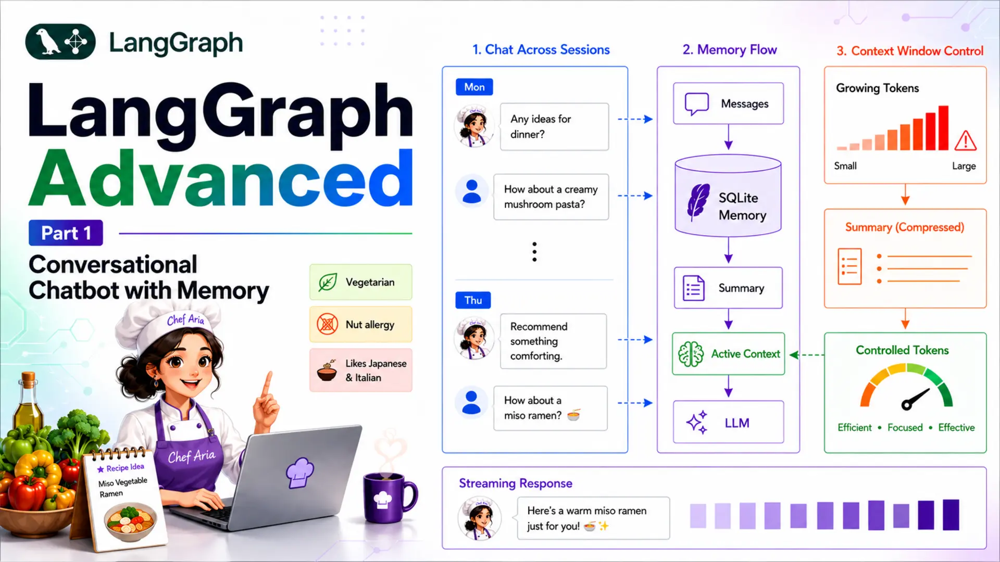
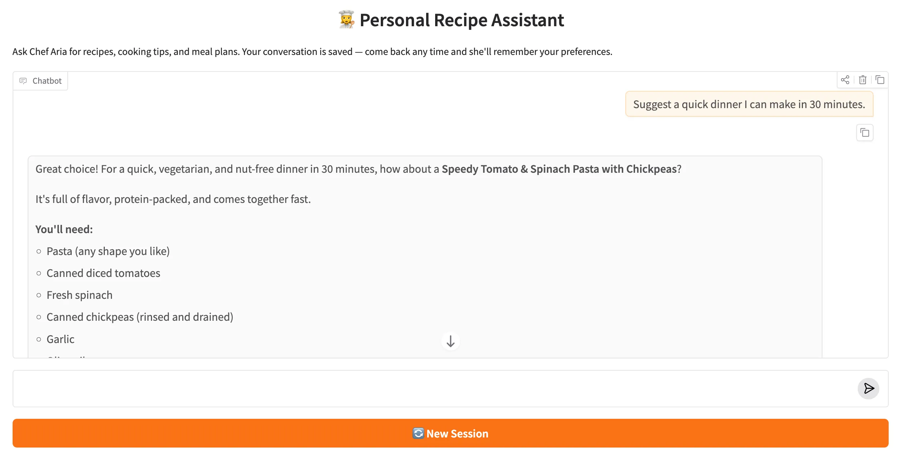

LangGraph Advanced: Part 1 — Conversational Chatbot with Memory

📚 Table of Contents
- 1. Why Production Chatbots Need More Than Basic Memory
- 2. Installation & Setup
- 3. State Design for Production Chatbots
- 4. The Summarisation Pattern
- 5. Complete Example: Personal Recipe Assistant
- 5.1 Architecture Overview
- 5.2 Project Structure
- 5.3 State (state.py)
- 5.4 Nodes (nodes.py)
- 5.5 Graph Assembly (graph.py)
- 5.6 Runner & Console Output (recipe_runner.py)
- 5.7 Graph Diagram
- 6. Web Interface
- 7. Conclusion
1. Why Production Chatbots Need More Than Basic Memory
LangGraph's checkpointers (covered in Basics Part 4) solve persistence — every message is stored in a SQLite database and restored for the next turn. That solves the between-session memory problem. But there is a second, harder problem hiding inside long conversations: the context window.
Every LLM has a maximum number of tokens it can process in a single call. Pass in too many tokens and the call fails, the response gets truncated, or the cost skyrockets. For short demos this never matters. For a real chatbot that users return to day after day, it becomes the dominant engineering challenge.
The Unbounded History Problem
Each time a user sends a message, LangGraph restores the full message list from the checkpointer and passes it — plus the new message — to the LLM. After 20 turns that list contains 40 messages. After 100 turns it contains 200 messages. The token count grows without bound.
The hidden cost of naïve persistence
A naïve chatbot that stores every message costs 10× more per call after 100 turns than after 10 turns — and eventually hits a hard error when the context limit is exceeded. The state must be actively managed, not just accumulated.
This is not a LangGraph-specific limitation — it applies to any stateful LLM application. LangGraph just gives you the right hooks to solve it cleanly.
Trim vs Summarise
There are two mainstream strategies for controlling message history:
| Strategy | How it works | What is lost | Best for |
|---|---|---|---|
| Trim | Delete the oldest N messages once the list exceeds a threshold | All detail in deleted messages — gone forever | Customer-support bots where old turns are truly irrelevant |
| Summarise | Ask the LLM to compress old messages into a short paragraph, then delete them | Verbatim wording — but key facts are preserved in the summary | Assistants that need to remember facts across many sessions (preferences, history) |
For a recipe assistant that remembers dietary restrictions and favourite cuisines, trimming would quietly discard facts the user mentioned two days ago. Summarisation compresses the conversation while keeping those facts alive in the summary field. That is the pattern this post teaches.
Our Scenario: Personal Recipe Assistant
Throughout this post we build Chef Aria — a Personal Recipe Assistant that remembers your dietary preferences, favourite cuisines, and past recipe discussions across many sessions. A user might tell Chef Aria on Monday that they are vegetarian and allergic to nuts. On Thursday, Aria should still know this — even if the original Monday message has long since been compressed into the summary.
Why this scenario needs summarisation
Dietary preferences and cooking history are valuable long-term context. A trim strategy would silently delete them. Summarisation keeps the facts alive while preventing the token count from growing indefinitely — exactly what a production recipe assistant needs.
The app uses SqliteSaver for cross-session persistence and a Gradio streaming UI so responses appear token by token. By the end of this post you will have a fully working chatbot you can run locally and reuse as a template for any long-running assistant.
2. Installation & Setup
Install the required packages in a virtual environment:
Create a .env file in the project root with your Gemini API key and optional configuration overrides:
SUMMARY_THRESHOLD=6 means the summarisation node fires after 6 messages are in state. You can raise this to allow longer free-running conversation before compressing.
Configuring the LLM
All runtime settings live in a single Config class so they are easy to tune without hunting through multiple files:
DB_PATH uses os.path.dirname(__file__) so the SQLite file is always created next to config.py, regardless of which directory you run the app from. The LLM wrapper reads these values:
3. State Design for Production Chatbots
In Basics Part 2 you learned that LangGraph state is a TypedDict and that fields with an Annotated reducer accumulate values instead of overwriting them. The production chatbot state builds directly on that foundation — it just adds one new field: summary.
Adding a summary Field
The full state for the recipe assistant is deliberately minimal — just two fields:
- messages — the add_messages reducer appends new messages instead of overwriting the list. It also handles RemoveMessage instructions: when the summarise node returns a list containing RemoveMessage(id=...) objects, the reducer deletes those messages by ID.
- summary — a plain Python str with no special reducer (last-write-wins). The summarise node writes a new value here each time it runs. Starts as an empty string.
We define RecipeState as our own TypedDict rather than using LangGraph's MessagesState shortcut because we need the additional summary field — MessagesState only provides messages.
How messages + summary Work Together
At any given moment the state holds two complementary pieces of context:
The dual-context model
summary carries the compressed history of everything that happened before the summarisation threshold was reached. messages carries the recent turns in full detail. The chat node prepends the summary as an extra system message so the LLM sees both — it "remembers" the past without paying the token cost of storing every message verbatim.
Concretely, the chat node's prompt construction looks like this:
The LLM receives: persona + summary + recent messages. The token budget is bounded because messages is periodically compressed and the summary is short (<150 words by default).
4. The Summarisation Pattern
The summarisation pattern has three interlocking pieces: a summarise node that uses the LLM to compress old messages, a router function that decides when to trigger it, and a conditional edge that wires the two together. This section walks through each piece before the complete example assembles them.
The Summarisation Node
The summarise node does three things in sequence:
- Selects the old messages — everything except the two most recent turns.
- Asks the LLM to compress them into a short paragraph (extending any existing summary).
- Returns RemoveMessage objects for each old message so the add_messages reducer deletes them from state.
Why keep the last 2 messages?
The most recent user question and the assistant's answer are the active context. Summarising them before the user sees a reply would lose the immediate conversational thread. Keeping them in messages ensures the next turn has fresh context; everything older lives in the summary.
The summarise prompt (loaded from prompts/summarize.txt) uses two placeholders. If an existing summary is present it is extended rather than replaced, so the compression is incremental:
When to Summarise: Conditional Routing
After the chat node responds, a router function inspects the message count. If it exceeds Config.SUMMARY_THRESHOLD (default 6), execution routes to summarize; otherwise the graph ends immediately.
This function is registered as a conditional edge out of the chat node. The explicit mapping dict ensures both branches appear as labelled edges in the generated graph diagram:
After summarize runs, the graph always ends — the summarised state is checkpointed automatically. The next user message starts a new graph execution with a clean message list (just the last 2 messages) and the accumulated summary.
End-to-End Flow
Here is the full lifecycle of a single user message inside this graph:
Turn-by-turn lifecycle
- Restore — checkpointer loads RecipeState for the thread_id (messages + summary).
- chat node — prepends summary as system context, calls the LLM, appends the AI reply to messages.
- should_summarize — counts messages; routes to summarize if > threshold, else END.
- summarize node (if triggered) — compresses old messages, writes new summary, deletes old messages via RemoveMessage.
- Checkpoint — updated state is persisted. Next turn starts here.
5. Complete Example: Personal Recipe Assistant
The following sections walk through every file of the project — from state to graph to runner — and then show the console output you will see when you run the demo.
Architecture Overview
The recipe assistant graph has exactly two nodes and two possible exit paths:
chat node
Receives the full state (summary + recent messages), calls Chef Aria via Gemini, and appends the AI reply to messages.
summarize node
Triggered conditionally. Compresses old messages into a ≤150-word summary and deletes the originals with RemoveMessage.
should_summarize
Router function. Checks message count after each chat turn — routes to summarize if > SUMMARY_THRESHOLD, else END.
SqliteSaver
Persists RecipeState to disk. Each thread_id keeps an isolated conversation history that survives process restarts.
Project Structure
State (state.py)
Two fields, two jobs: messages accumulates and supports deletion; summary is overwritten each time the summarise node runs.
Nodes (nodes.py)
Both nodes live in a RecipeNodes class. The constructor loads the LLM and both prompts from prompts/:
chat_node — builds the prompt from persona + optional summary + recent messages:
summarize_node — compresses old messages and schedules their deletion:
Graph Assembly (graph.py)
The router function and graph wiring are concise — the interesting work happens inside the nodes:
sqlite3.connect(..., check_same_thread=False) is necessary because the Gradio streaming server runs the graph on a background thread while the main thread manages the UI.
Runner & Console Output (recipe_runner.py)
RecipeRunner wraps the compiled graph and exposes three methods used by both the CLI demo and the Gradio app:
The __main__ block runs three demos: multi-turn summarisation, thread isolation, and cross-session persistence. Here is the expected console output:
Graph Diagram
The compiled graph has a clean two-node structure. save_figure() produces this Mermaid diagram:
Reading the diagram
Solid arrows are unconditional edges. Dashed arrows are conditional edges — the router label shows which return value triggers each path. After chat, the graph either ends immediately (under the threshold) or passes through summarize first.
6. Web Interface
The Gradio UI wraps RecipeRunner in a streaming chat interface. Each user message yields tokens one by one so the reply appears progressively — the same streaming pattern from Basics Part 4. A New Session button generates a fresh thread_id so the user can start a brand-new conversation without clearing the database.
Key design decisions in the app:
- gr.State for thread_id — each browser tab gets its own UUID on load, so two users opening the app simultaneously get isolated conversations automatically.
- Streaming via yield — respond() accumulates tokens and yields the growing string each time, satisfying Gradio's streaming contract for ChatInterface.
- New Session button — replaces the thread_id in gr.State with a new UUID. The old conversation stays in the database but the UI starts fresh.
- No theme= argument — passing theme= to ChatInterface raises a TypeError; styling should be handled via gr.Blocks wrapping.
Run the web app with:
Open the Gradio URL printed in the terminal (default http://127.0.0.1:7860). Ask Chef Aria several questions, then close the browser, reopen it, and continue the conversation — Aria will remember your preferences from the summary stored in recipe_chat.db.

Fig. 1 — Chef Aria streaming a recipe suggestion. The New Session button (top right) starts a fresh thread without erasing the database.
What to Try
Use the following sequence to see every feature in action — summarisation, cross-turn memory, thread isolation, and cross-session persistence:
✅ 7. Conclusion
You have built a production-grade conversational chatbot that handles the two hardest problems in long-running assistants: cross-session persistence (via SqliteSaver) and bounded token usage (via the messages + summary pattern). The design is deliberately minimal — two nodes, one conditional edge, and two state fields — yet it scales to real workloads where users return day after day with growing conversation histories.
The pattern is completely general. To adapt it for a different domain, replace prompts/chat.txt with a new persona, update prompts/summarize.txt to capture the right kind of facts, and rename the classes. The graph structure, state design, and streaming plumbing stay exactly the same.
- A summary field in RecipeState carries compressed history across summarisation cycles without the token cost of storing full messages verbatim.
- The summarize_node incrementally compresses old messages using the LLM and deletes originals with RemoveMessage — keeping only the last 2 messages in full.
- The should_summarize conditional edge fires only when the message count exceeds the threshold — normal turns pay zero extra cost.
- SqliteSaver persists RecipeState across process restarts; each thread_id is a completely isolated conversation.
- Token-by-token streaming via stream_chat() and a Gradio gr.Blocks UI delivers a responsive, production-ready chat experience.
LangGraph Advanced Series — Part 1 of 5
This post is Part 1 of the LangGraph Advanced series. The remaining four parts build on the bounded-memory foundation established here:
- Part 2 — Multi-Agent Architectures: coordinating specialised LangGraph graphs
- Part 3 — Tool Use & ReAct Agents: binding and calling real-world tools
- Part 4 — Human-in-the-Loop: interrupt/resume patterns for approval workflows
- Part 5 — Subgraphs & Parallel Execution: nesting graphs and running branches concurrently

Technical Stacks
 Python
Python
 LangGraph
LangGraph
 LangChain
LangChain
 Gemini
Gemini
 Gradio
Gradio

References
-
 GitHub Repository:
shafiqul-islam-sumon/langgraph
GitHub Repository:
shafiqul-islam-sumon/langgraph
-
LangGraph Docs — How to add summary of the conversation history:
langchain-ai.github.io/langgraph/how-tos/memory
-
LangGraph Docs — Persistence & Checkpointers:
langchain-ai.github.io/langgraph/concepts/persistence
-
Google AI Studio (Gemini API key):
aistudio.google.com